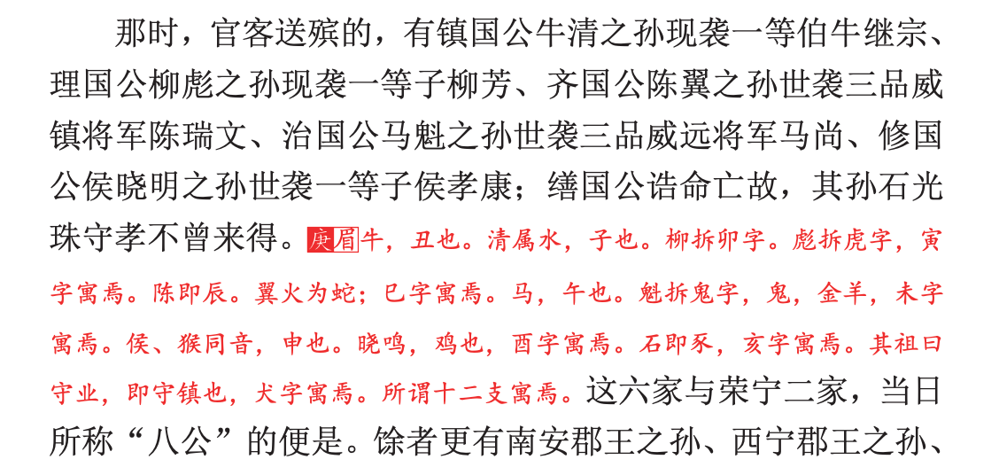
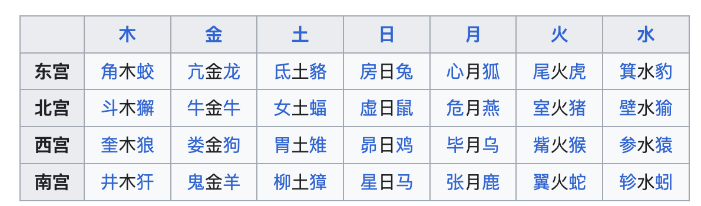

今天是个周日，公司的服务要做一些迁移工作，需要来公司加班一天，我主要是来提供情绪价值的，并没有太多需要我做的事情，借这个难得清闲的工作时间写一篇 blog 吧，讲一个我前段时间读红楼梦时的一个小发现。
在红楼梦第十四回「林如海捐馆扬州城 贾宝玉路谒北静王」中，提到给秦可卿送殡的队伍，之前几次读到这里时都是草草略过，这次读脂评汇校本时看到下边这么一段批语。批注的人提到，这些名字对应的是十二生肖，这让我眼前一亮，原来这里埋了一个生肖梗。

原文如下：
那时，官客送殡的，有镇国公牛清之孙现袭一等伯牛继宗、 理国公柳彪之孙现袭一等子柳芳、齐国公陈翼之孙世袭三品威镇将军陈瑞文、治国公马魁之孙世袭三品威远将军马尚、修国公侯晓明之孙世袭一等子侯孝康；缮国公诰命亡故，其孙石光珠守孝不曾来得。
先来回顾一下十二生肖：子鼠 丑牛 寅虎 卯兔 辰龙 巳蛇 午马 未羊 申猴 酉鸡 戊狗 亥猪。
接下来我来拆解每一句，逐个盘点下这些名字所对应的生肖：
子鼠 丑牛
镇国公牛清之孙现袭一等伯牛继宗
- 牛清的「清」，表示水，在天干地支中，“子”是十二地支之一，对应的五行是“水”，也就是地支五行中说的「子亥属水」，所以这里的清就代表子鼠
- 牛很明显是丑牛
这里也把地支五行贴一下，来自百度百科：寅卯属木，寅为阳木，卯为阴木；巳午属火，午为阳火，巳为阴火；申酉属金，申为阳金，酉为阴金，子亥属水，子为阳水，亥为阴水；辰戌丑未属土，辰戌为阳土，丑未为阴土。
寅虎 卯兔
理国公柳彪之孙现袭一等子柳芳
- 柳彪的「彪」字，左半边是个虎，代表寅虎
- 柳彪的「柳」字右边是个卯字代表卯兔
辰龙 巳蛇
齐国公陈翼之孙世袭三品威镇将军陈瑞文
- 陈谐音晨辰，代表辰龙
- 陈翼的「翼」对应翼宿，即翼火蛇，二十八宿之一，所以翼代表的是巳蛇
午马 未羊
治国公马魁之孙世袭三品威远将军马尚
- 马魁的「马」，午马
- 马魁的「魁」，左边是个鬼字，指二十八宿鬼宿中的即鬼金羊，所以魁代表未羊
在这个禽星表中可以看到前边所说的「翼火蛇」和「鬼金羊」

申猴 酉鸡
修国公侯晓明之孙世袭一等子侯孝康
- 侯晓明的「侯」字，谐音猴，即申猴
- 侯晓明的「晓明」，值在清晨鸣叫的鸡，对应酉鸡
戊狗 亥猪
缮国公诰命亡故，其孙石光珠守孝不曾来得
- 前半句「缮国公诰命亡故」，脂评本中提到：缮国公名叫「守业」，因为狗是用来看家守业的，所以这里指代的是戊狗。（我觉得这个解释稍微牵强了一点点）
- 石光珠的「石」，谐音豕（shǐ），指猪即亥猪。脂评中没有提到「珠」字，我觉得也是猪的意思。
曹公在每句话中暗藏了两个生肖，实数妙哉。